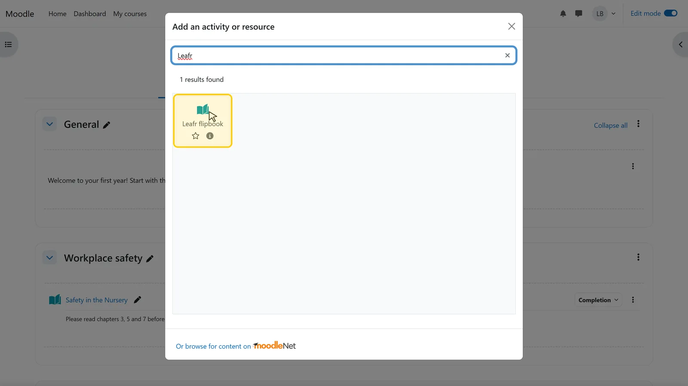
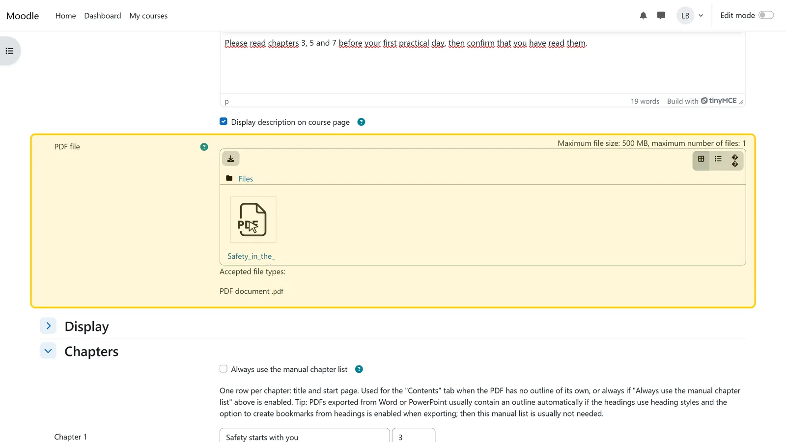
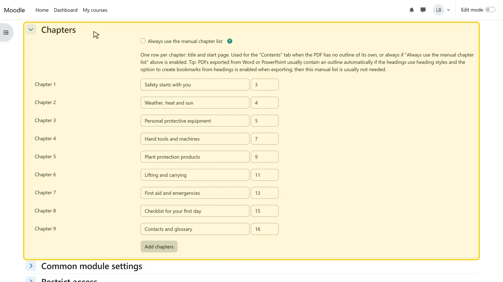
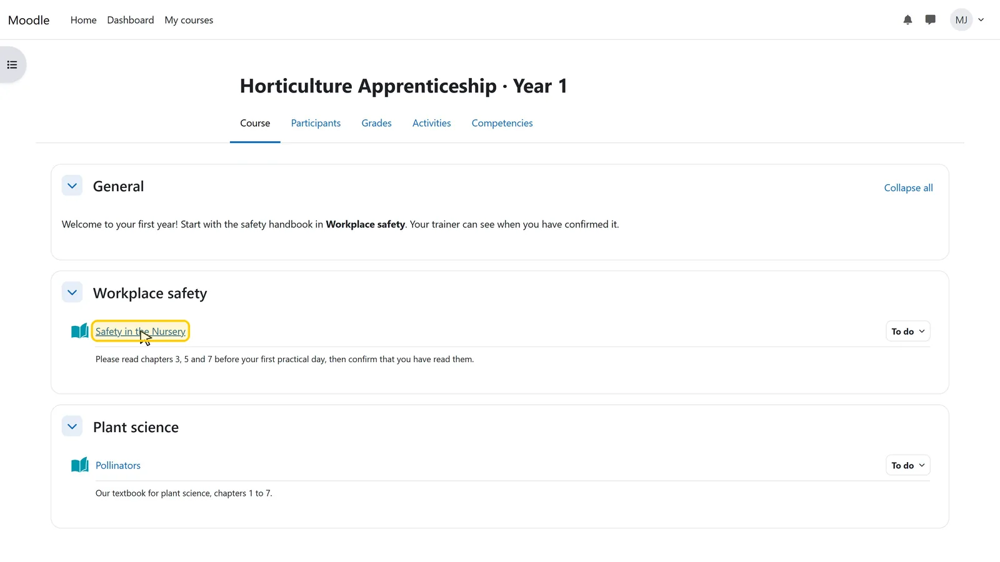
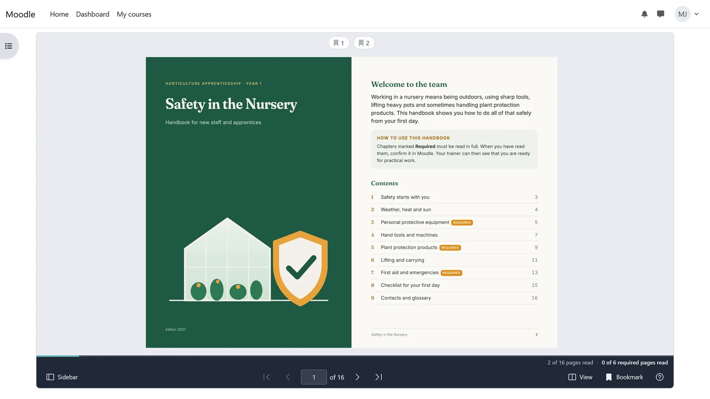
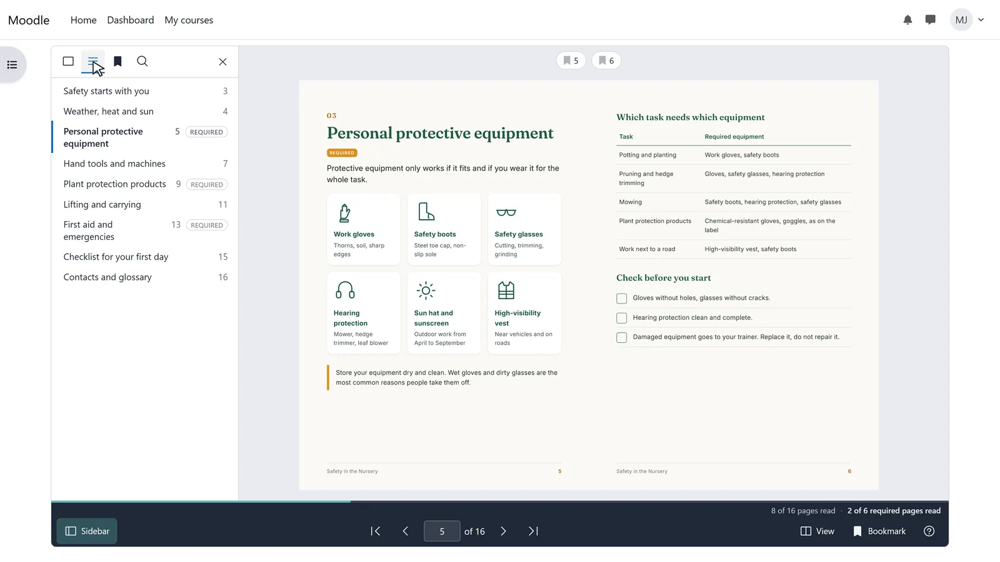

How to show a PDF as a flipbook in Moodle
Out of the box, Moodle offers a PDF as a file: depending on the setting it appears in the browser’s PDF viewer, in a new window or as a download, and the course only knows that it was opened. With the free activity plugin Leafr the PDF opens inside the course as a book: students turn pages, jump to chapters and search the text, and Leafr records which pages they have seen.
Updated 5 November 2026
What you need
- Moodle 4.5 to 5.3 with Leafr installed by an administrator (from the Moodle Marketplace)
- Editing rights in the course, for example as a teacher
- A PDF file
Step by step
-

Step 1 of 6Add Leafr to a section
Switch on Edit mode at the top right. In the section, click Add an activity or resource, type “Leafr” into the search field and choose Leafr flipbook.
-

Step 2 of 6Upload the PDF
Enter a name and drag the PDF into the PDF file field. The description is optional; it appears on the course page if you tick “Display description on course page”.
-

Step 3 of 6Check the chapters
Leafr takes the table of contents from the PDF’s bookmarks. If the PDF has none, enter chapter titles and start pages under Chapters. Under Display you choose the Start page and whether students may download the original file (Allow download).
-

Step 4 of 6Save and open
Click Save and return to course. The flipbook now appears in the section; one click opens it.
-

Step 5 of 6Students turn the pages
On a large screen Leafr shows two pages side by side, on a phone one page. Students turn pages with the arrows, the page number field, the keyboard or by dragging a corner. Next time the PDF opens at the page they read last.
-

Step 6 of 6Contents, search and bookmarks
The Sidebar button opens page thumbnails, the table of contents, bookmarks with notes and full-text search. Students who prefer scrolling switch to the simple view in the View menu; it also works with screen readers.
Good to know
Download switched off
With Allow download off, Leafr shows no download button. The browser still has to receive the PDF to display it, so a determined person can save it. Leafr is no copy protection.
Contents and search
The automatic table of contents needs bookmarks in the PDF, for example from Word headings. Full-text search needs real text; run scanned documents through text recognition (OCR) first.
Browsers
Chrome or Edge 125 or later, Firefox ESR, Safari 18 or later. Older browsers show a message instead of the document.